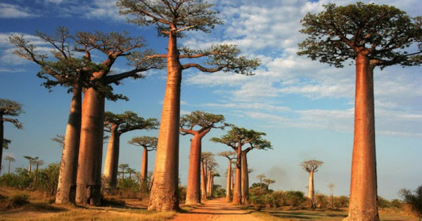
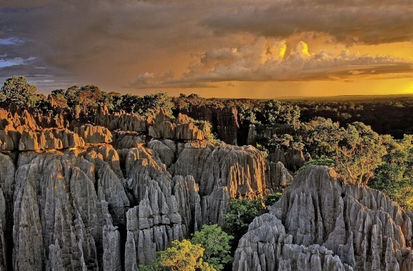
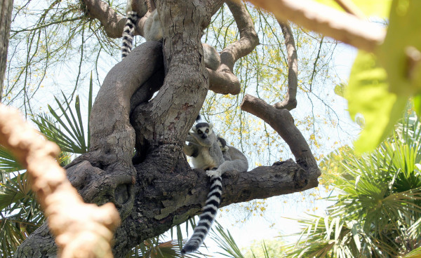
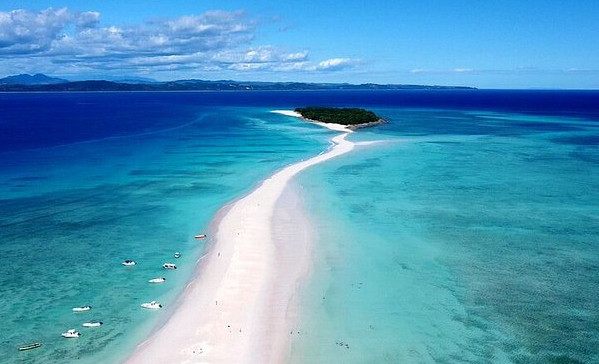

Madagascar: O Paraíso dos Ecossistemas Únicos
Madagascar se tornou um lugar conhecido principalmente em razão dos filmes de animação de mesmo nome. É um lugar com uma natureza impressionante e uma cultura muito rica, um viagem para a ilha de Madagascar pode render experiência incríveis!
Apenas por contemplar a natureza e avistar espécies raras já vale a pena a viagem para a região, mas saiba que não é só isso que o lugar tem a oferecer.
Neste artigo, saiba o que visitar em uma viagem para a ilha de Madagascar e confira informações importantes para já começar a planejar essa experiência que tem tudo para ser incrível!
Documentos necessários
Para entrar no país será necessário levar consigo o passaporte, com validade mínima de seis meses, também o Certificado Internacional de Vacinação contra a Febre Amarela.
Ao chegar na ilha, você pode solicitar o visto de entrada. Para maiores garantias de que sua permanência por lá seja permitida, emita uma "Autorização de Desembarque" através do iVisa, que pode ser feita online.
Clima e melhor época para visitar
Os meses de maio e outubro são considerados os melhores para visitar esta região. Isso porque a possibilidade de chuva é baixa e as temperaturas estarão mais agradáveis, com uma média de 25°C durante o dia e com mínimas de 9°C durante a noite.
Leve roupas leves para os passeios ao longo do dia e não deixe de incluir na mala casacos e outros itens para o clima mais fresco das noites de Madagascar.
De um modo geral, novembro a abril é uma época mais chuvosa por lá, enquanto que de maio a outubro o clima estará mais seco.
No entanto, o clima do país é bastante variado devido à sua geografia, então após organizar o seu roteiro de viagem verifique o clima e melhor momento para ir em cada cidade ou local pretendido, uma vez que a depender da região as condições climáticas podem ser diferentes dessa orientação mais geral.
Moeda
A moeda de Madagascar é o Ariary Malgaxe. O indicado é que você troque o Real pelo Euro e viaje para o país com a moeda europeia. Ela é a mais aceita no país.
No entanto, há um limite, podendo retirar em caixas eletrônicos do país até 150 Euros por transição. Assim sendo, busque opções para realizar a troca do Euro pelo Ariary Malgaxe.
O que visitar, ver e fazer em Madagascar: 4 lugares imperdíveis
1. Avenida dos Baobás

Mais parece cena de filme! Entre as coisas para ver em Madagascar, em direção à região de Boeny, no oeste de Madagascar, estão os famosos Baobás.
Essas árvores podem medir até 30 metros de altura e 11 metros de diâmetro de trono. A sua forma curiosa tem sido uma fonte de inspiração para muitas lendas. Por exemplo, aquela que diz que eram árvores tão belas e vaidosas que os deuses as puniram virando-as de cabeça para baixo, escondendo suas copas sob a terra e deixando as raízes crescerem para cima.
2. Parque Nacional Tsingy de Bemaraha

Junto à avenida dos Baobás, o Parque Nacional Tsingy de Bemaraha é um dos mais visitados porque é cenário para fotografias espetaculares.
Foi declarado Patrimônio da Humanidade há mais de 30 anos. É conhecido como Bosque de Pedra, pois devido a sua orografia é formado por uma enorme quantidade de agulhas calcárias.
Neste loca, a erosão causada pela água provocou uma extensa rede de fissuras, sem contar as fissuras nas zonas mais resistentes. O turismo se aproveitou e agora ele serve como um passeio com se fossem as passagens secretas de um labirinto.
Também localizado neste parque nacional, está o Desfiladeiro do Rio Manambolo, muitas florestas virgens, lagos e manguezais repletos de espécies únicas de lêmures e aves ameaçadas de extinção.
3. Reserva de Anja

Fonte: Pexels
Trata-se de uma reserva desenhada pelos habitantes especificamente para proteger a espécie de lémures Anja, que tem estado em perigo devido à constante desflorestação da zona. O local oferece visitas guiadas que incluem um localizador de animais, que fica na frente para rastrear os lêmures e faz a chamada para vê-los.
Não só os lêmures habitam, mas também existem outros tipos de animais, como camaleões, bichos-pau e muitos insetos de diferentes espécies. Por sua vez, é complementado por uma vegetação única e variada. É definitivamente um lugar essencial entre os lugares para se visitar em Madagascar.
4. Praia de Nosy Be

O que mais você pode visitar em Madagascar? Uma das respostas é a praia de Nosy Be, localizada no litoral norte. Você consegue chegar até ela através de um passeio de barco partindo de Ankify e chegar lá em poucos minutos.
Fica na ilha de mesmo nome, para onde costumam ir muitos turistas italianos, pois tem o aeroporto Fascene que tem vôos internacionais diretos de Milão durante o verão europeu.